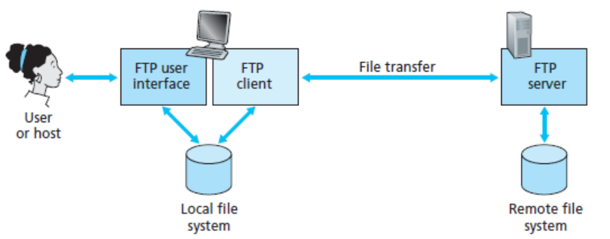
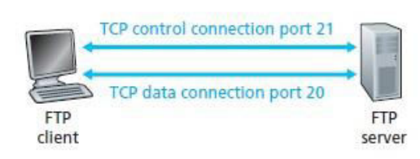

FTP is used for transferring file from one host to another host.
Figure 1.6:
Working of FTP
|

|
- The user first provides the hostname of the remote host, causing the FTP client process in the
local host to establish a TCP connection with the FTP server process in the remote host.
- The user then provides the user identification and password, which are sent over the TCP
connection as part of FTP commands.
- Once the server has authorized the user, the user copies one or more files stored in the local
file system into the remote file system (or vice versa).
- FTP uses two parallel TCP connections to transfer a file, a control connection and a data
connection.
- The control connection is used for sending control information between the two hosts.
- The data connection is used to actually send a file.
Figure 1.7:
FTP with two connections
|

|